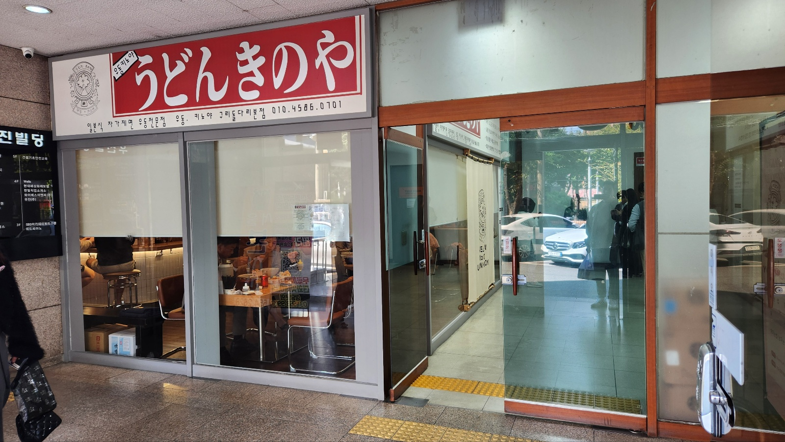
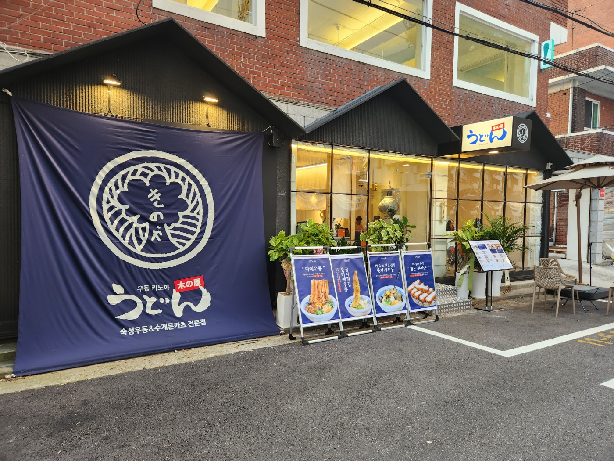
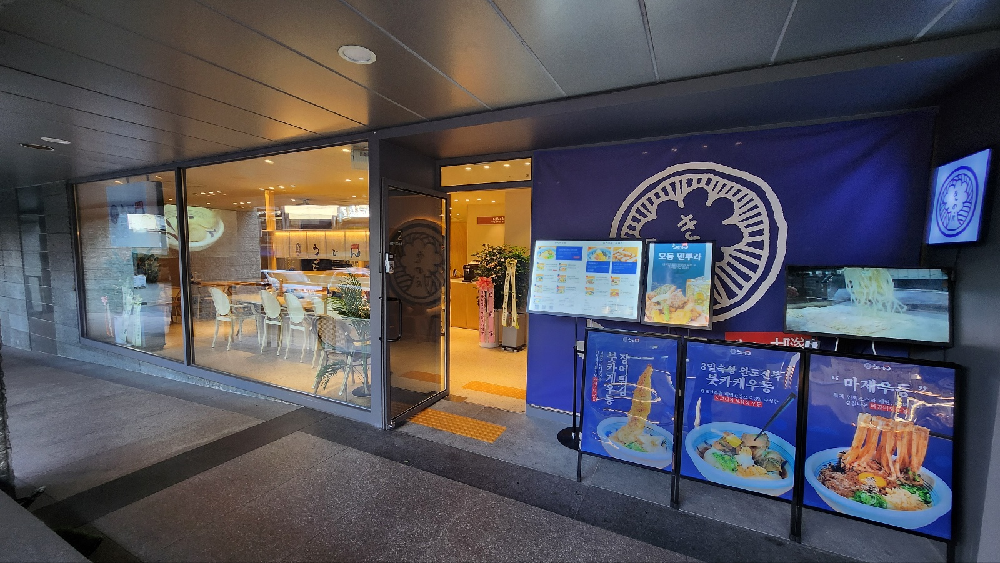
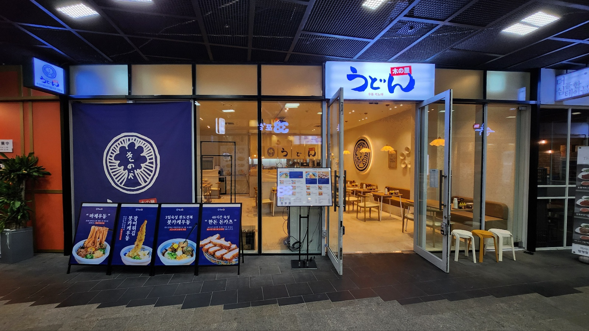
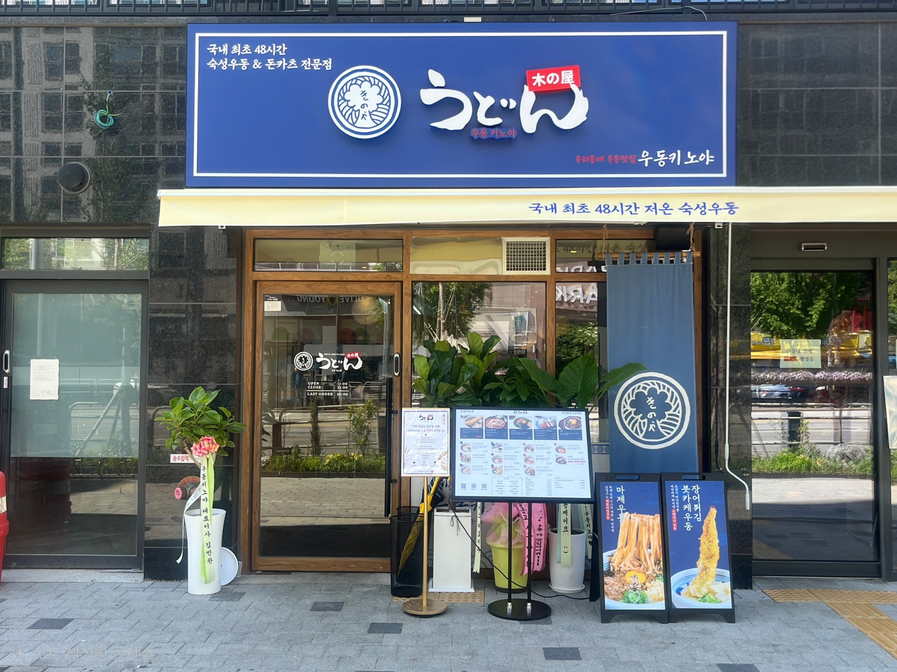
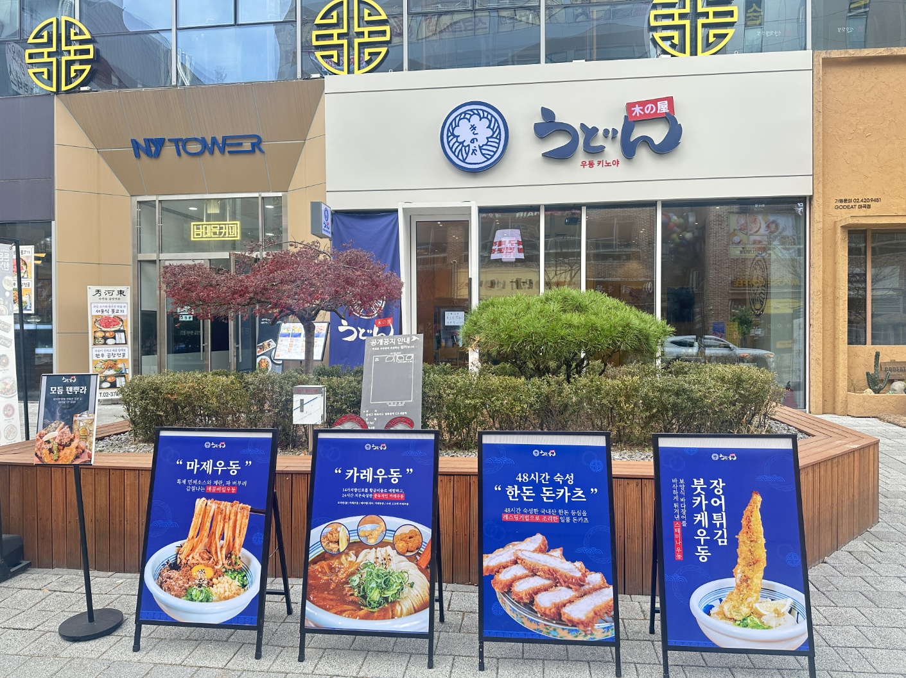
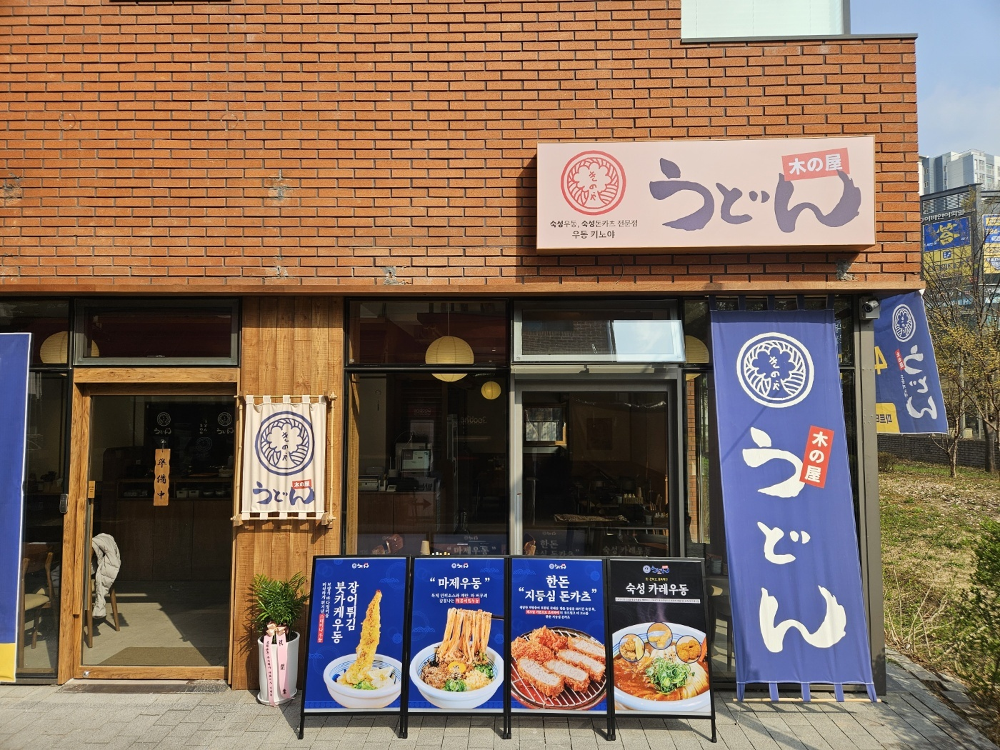
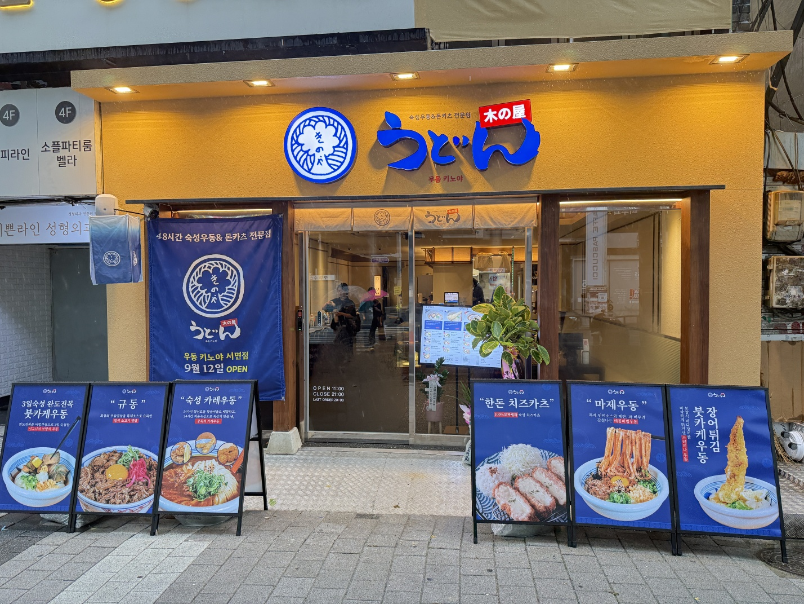

01 · Factory
自家製麺工場
물, 소금, 밀가루. 단순한 재료일수록 원칙은 더 까다로워집니다.
우동키노야를 이루는 세 가지 숫자입니다. 각 숫자에는 이유가 있습니다.
본사 제공 자료 기준이며, 배합·숙성 공정은 지속적으로 관리·개선됩니다.
우동키노야는 도쿄 단골집에서 먹던 소박하지만 맛있었던 우동집에 대한 동경에서 시작되었습니다. 그 맛에 매료되어 일본 도쿄까지 몇 번을 찾아가 직접 자가제면 기술을 배웠습니다. 월급도 없이 최소한의 생활비만 받아가며 배웠고 한국에서 그 우동맛을 보여줄 희망에 부풀어 힘든 것도 몰랐고 그 좋았던 기억을 모두와 함께 나누고 싶었습니다.
점포를 찾을 때 맛이 보장된다면, 장소는 아무리 외진 곳이어도 상관없다 자신있게 생각했습니다. 하루 몇 만원 수익이 전부였던 매출은 6개월 만에 하루 방문객이 100명이 넘고, 오픈 1년이 되던 달에는 하루 딱 3.5시간 동안 운영하며 간판조차 보이지 않는 작은 매장이 월 4,000~5,000명이 방문하는 가게가 되었습니다.
우동키노야는 자체 제면공장을 운영합니다. 본사가 매일 반죽·숙성·패킹까지 마친 48시간 숙성면을 매장에 공급하고, 매장은 검증된 프로세스로 삶고 담기만 하면 됩니다.
자가제면과 동일한 퀄리티를 원팩화된 약 80cm 면으로 구현해, 매장은 간단한 조리방식으로 빠른 회전율을 완성합니다.
아닙니다. 우동키노야는 본사에서 표준화한 우동키노야 전용 완제 우동면을 공급하기 때문에 매장에서 매일 직접 반죽하고 제면할 필요가 없습니다. 본사가 제면·숙성·패킹까지 마친 면을 매장에 전달하며, 매장은 검증된 프로세스로 삶고 담기만 하면 됩니다.

물, 소금, 밀가루. 단순한 재료일수록 원칙은 더 까다로워집니다. 우동키노야는 반죽 후 48시간의 저온 숙성 과정을 거쳐야 지금의 쫄깃한 식감이 완성된다고 판단해, 이 공정을 표준으로 고정했습니다.
지금의 배합과 숙성 방식을 확정하기까지 13개월의 면 연구 기간이 있었습니다.
매일 반죽,숙성,패킹까지 마친 면을 매장에 공급하고, 매장은 점증된 프로세스로 삶고 담기만 하면 됩니다.
면 길이·숙성시간은 본사 표준 공정 기준이며, 계절·환경에 따라 세부 관리값이 조정될 수 있습니다.
우동키노야 구리본점은 보다 손쉬운 재료손질과 한템포 빠른 회전율을 핵심으로 이 같은 성과를 냈습니다.
본사 제공 자료 · 구리본점 실제 POS 매출현황 (8월 1일자 일매출 3,805,700원)
위 수치는 구리본점의 특정 기간 실적 사례이며, 전 매장의 평균 매출을 의미하지 않습니다. 측정기간·POS 집계기준·VAT 포함 여부는 상담 시 최신 자료로 안내해 드립니다.
고객에게는 특별하게. 점주에게는 간편하게.
실제 조리 공정은 메뉴와 매장 조건에 따라 일부 달라질 수 있습니다.
태블릿 주문으로 홀 주문 업무를 줄이고, 다찌형 구조와 주방 중심의 단순 동선으로 주문부터 서빙까지의 흐름을 효율화합니다.
운영 효율화 요소는 매장 구조·평수에 따라 적용 범위가 달라질 수 있습니다.
1~2인 고객과 빠른 회전율에 최적화된 다찌(바석) 중심 소형 매장 컨셉입니다. 주방과 홀 동선을 일체화해 인건비와 초기 투자비 부담을 낮췄습니다.
2인·4인 홀 테이블과 1인 다찌석을 결합해 직장인·가족·혼밥 수요를 동시에 흡수하는 표준 복합 매장 컨셉입니다.
무권리 점포나 기존 식당의 바닥·천장·설비 인프라를 최대한 살리고 우동키노야의 핵심 외관·다찌·사인물만 리뉴얼하여 거품을 뺀 실속형 공사입니다.
현재 운영 중인 매장 자리에서 기존 주방·홀 설비를 재활용하여 최소 비용으로 우동키노야로 재도약하는 기존 업주 맞춤형 업종변경 솔루션입니다.
나머지는 본사 시스템이 맡습니다.
지원 프로그램의 세부 내용과 운영 여부는 상담 시 최신 기준으로 안내해 드립니다. 본사 지원 자세히 보기 →
현재 전국 51개 매장(서울 26 · 경기 17 · 인천 1 · 충청 2 · 대구 1 · 부산 3 · 제주 1)이 운영 중입니다.









우동키노야의 표준화된 시스템은 제면·상권개발·슈퍼바이징·품질관리 등 각 영역을 담당하는 본사 조직이 함께 만들어갑니다.
소셜미디어
영상으로 전하는 우동키노야 이야기.
브랜드의 신념, 메뉴 소개, 창업 성공 사례 등 다양한 소식을 영상으로 정확하고 생생하게 전달합니다.